A production-minded n8n workflow that turns public PlacidWay content into one on-brand, fact-checked Facebook post per day, with two layers of guardrails, a human review dashboard, and alerting so nothing fails silently.
samples/README.md). 2 are live on the test Page.| Brief | How it's done | Status |
|---|---|---|
| 1 Trigger | Daily 07:00 schedule, manual run, and a dashboard “Run now” | ✓ live |
| 2 Extract | Public sitemaps (robots.txt-advertised, ≤ 1 req/s, 5 requests a day), then the page's own JSON-LD with OpenGraph/HTML fallback. Captures title, URL, body, image, listed price | ✓ live |
| 3 Select | Weekday content rotation + category cool-down. UNIQUE(source_url) in Postgres guarantees a URL is never posted twice | ✓ live |
| 4 Generate | Claude returns structured parts (hook, 2–4 lines, CTA, 3–5 hashtags) plus a verbatim source quote per line. Code assembles the post (< 500 chars before the link) | ✓ live |
| 5 Guardrails | 9 deterministic rules (no medical claims, every number and price must be in the source, quotes must exist on the page…) + an independent Claude reviewer. Failures are rewritten with feedback; after 3 tries they go to a human and never auto-publish | ✓ live |
| 6 Publish | Photo uploaded unpublished, then a feed post with the image (immediate or natively scheduled) | ✓ live post |
| 7 Review option | publish_mode = approval | auto, switchable in the dashboard. Human edits are re-checked against the rules (server returns 422) | ✓ live |
| 8 Logging & errors | Every run logs the item, post text, FB post ID and status. Retries + an error workflow raise dashboard alerts with a specific fix | ✓ tested |
Stretch goals covered: variety rules · branded images (smart crop + brand bar, or a rendered card when there's no image) · review dashboard · engagement read-back · Instagram cross-post path (built; needs an IG Business account to verify).
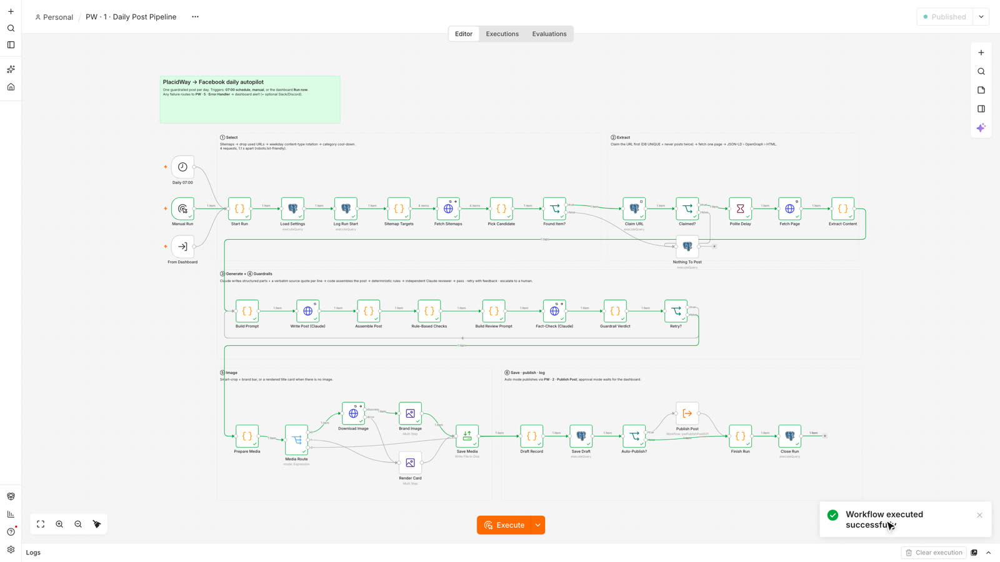
The main n8n workflow after a real run (all green): select · extract · generate + guardrails · image · save and publish.
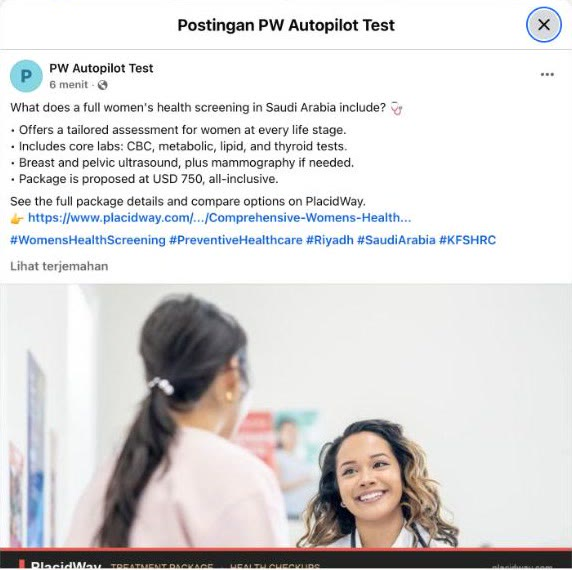
A post generated from a real PlacidWay package page and published live to the test Page (“PW Autopilot Test”, not affiliated with PlacidWay). View it on Facebook →
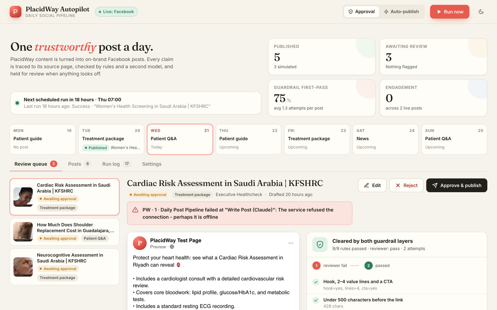
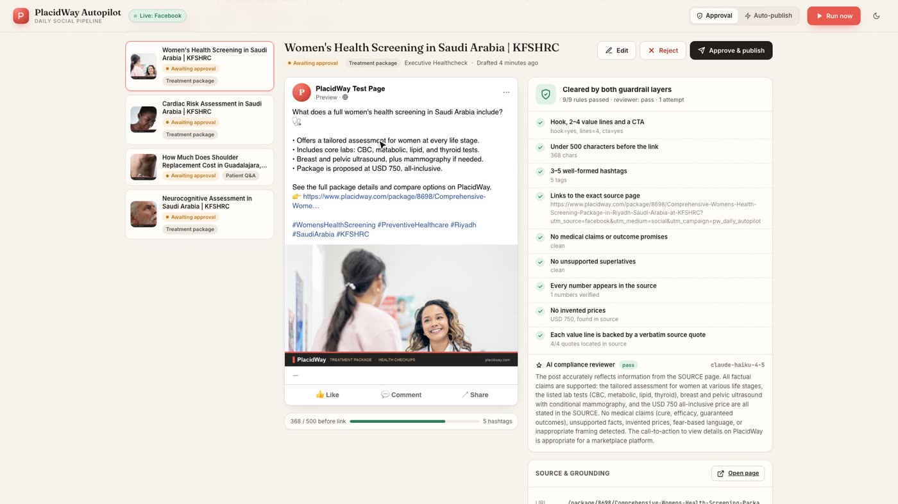
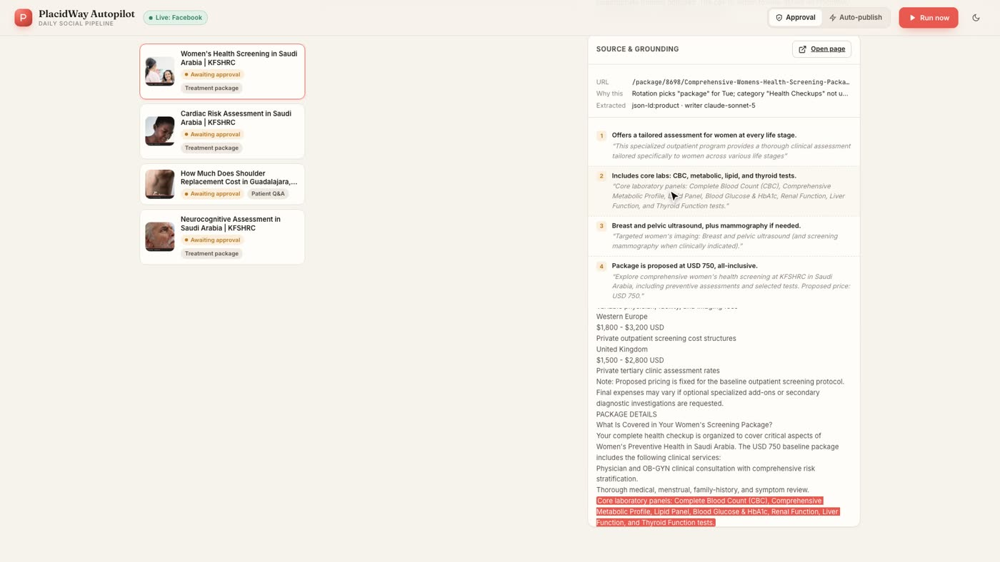
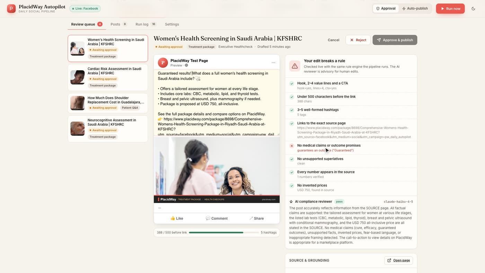
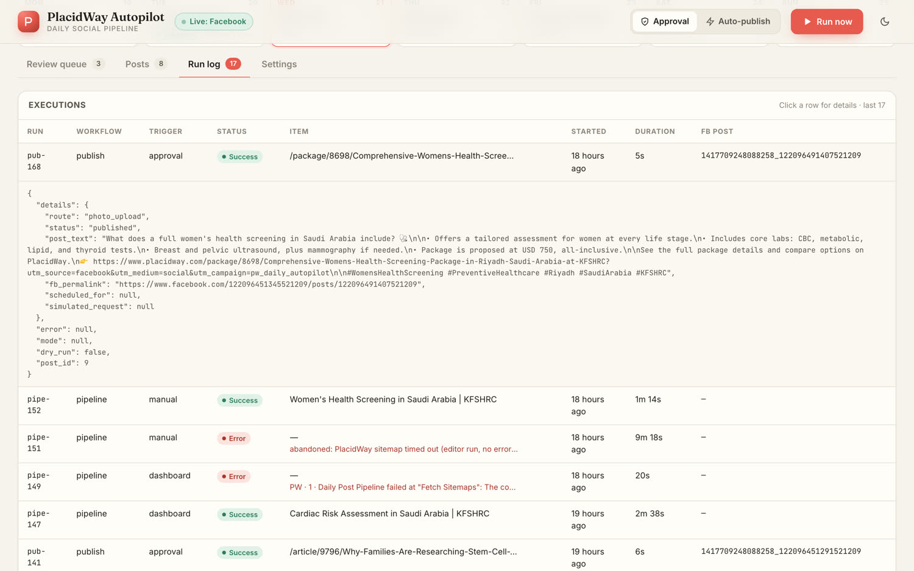
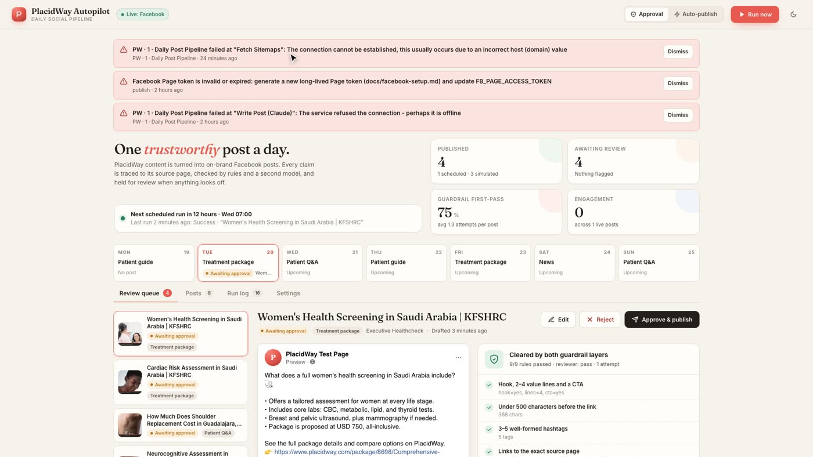
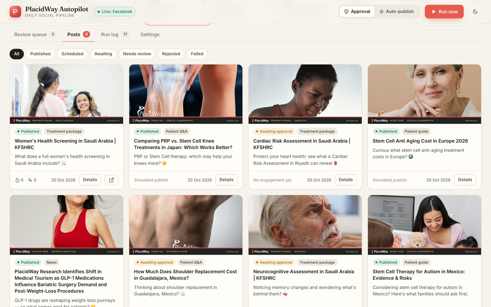
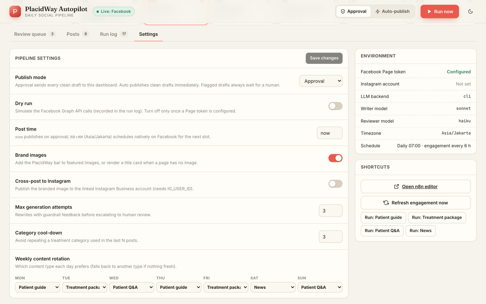
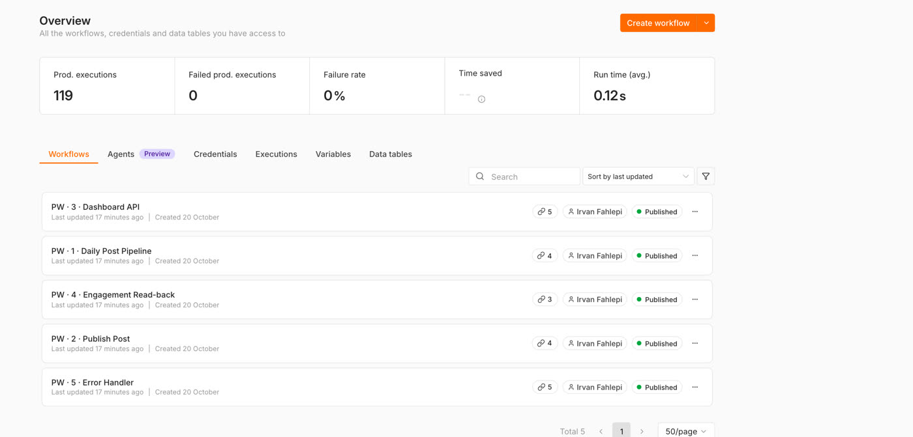
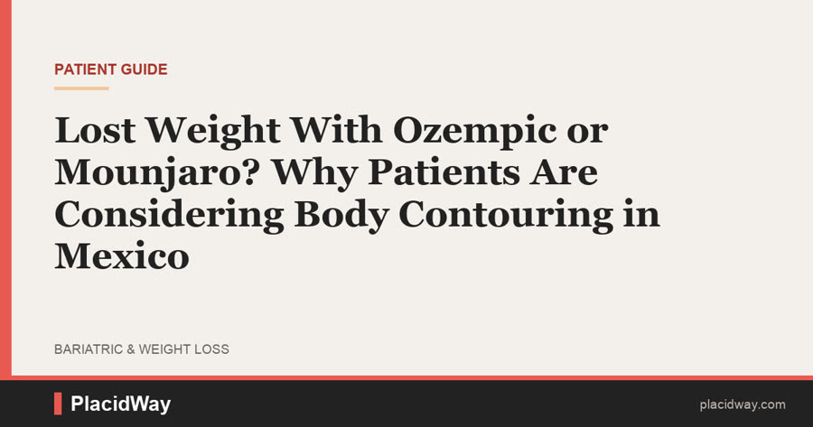
Never-expiring system-user token · idempotency check before retrying a publish · queue-mode n8n · prompt examples tuned with marketing · Slack approvals.